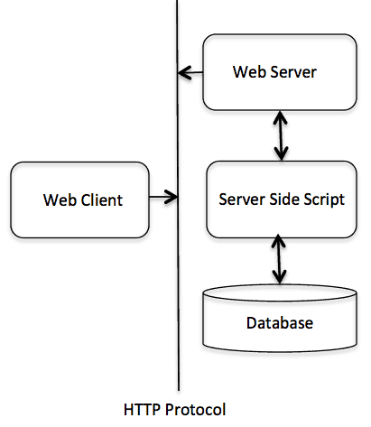

C++ Web プログラミング
CGI とは？
- 共通ゲートウェイインターフェース（CGI）は、Web サーバーとクライアントスクリプトの間で情報がどのように交換されるかを定義する一連の標準です。
- CGI 仕様は現在 NCSA によって保守されており、NCSA は CGI を次のように定義しています：
- 共通ゲートウェイインターフェース（CGI）は、外部ゲートウェイプログラムと情報サーバー（HTTP サーバーなど）を接続するためのインターフェース標準です。
- 現在のバージョンは CGI/1.1 で、CGI/1.2 バージョンが推進されています。
Web ブラウジング
CGI の概念をよりよく理解するために、ハイパーリンクをクリックして特定のウェブページまたは URL を閲覧し、何が起こるか見てみましょう。
- ブラウザは HTTP Web サーバーに接続し、URL（ファイル名）を要求します。
- Web サーバーは URL を解析し、ファイル名を探します。要求されたファイルが見つかった場合、Web サーバーはファイルをブラウザに送り返します。見つからない場合は、誤ったファイルを要求したことを示すエラーメッセージを送信します。
- Web ブラウザは Web サーバーから応答を取得し、受信した応答に基づいてファイルまたはエラーメッセージを表示します。
しかし、このように構築された HTTP サーバーは、ディレクトリ内のファイルが要求されると、そのファイルを送り返すのではなく、プログラムとして実行し、実行によって生成された出力をブラウザに送り返して表示させます。
共通ゲートウェイインターフェース（CGI）は、アプリケーション（CGI プログラムまたは CGI スクリプトと呼ばれる）が Web サーバーおよびクライアントと対話できるようにする標準プロトコルです。これらの CGI プログラムは、Python、PERL、Shell、C または C++ などで記述できます。
CGI アーキテクチャ図
次の図は CGI のアーキテクチャを示しています：

Web サーバー構成
CGI プログラミングを行う前に、Web サーバーが CGI をサポートし、CGI プログラムを処理できるように構成されていることを確認してください。HTTP サーバーによって実行されるすべての CGI プログラムは、事前構成されたディレクトリ内に存在する必要があります。このディレクトリは CGI ディレクトリと呼ばれ、慣例により /var/www/cgi-bin と命名されています。CGI ファイルは C++ 実行可能ファイルですが、慣例によりその拡張子は.cgi。
デフォルトでは、Apache Web サーバーは /var/www/cgi-bin で CGI プログラムを実行するように構成されています。他のディレクトリで CGI スクリプトを実行するように指定したい場合は、httpd.conf ファイルで次の部分を変更できます：
<Directory "/var/www/cgi-bin">
AllowOverride None
Options ExecCGI
Order allow,deny
Allow from all
</Directory>
<Directory "/var/www/cgi-bin">
Options All
</Directory>
ここでは、Web サーバーが設定され、正常に動作していることを前提としています。Perl や Shell などの任意の CGI プログラムを実行できます。
最初の CGI プログラム
次の C++ プログラムを見てください：
例
#include <iostream>
using namespace std;
int main ()
{
cout << "Content-type:text/html\r\n\r\n";
cout << "<html>\n";
cout << "<head>\n";
cout << "<title>Hello World - 第一个 CGI 程序</title>\n";
cout << "</head>\n";
cout << "<body>\n";
cout << "<h2>Hello World! 这是我的第一个 CGI 程序</h2>\n";
cout << "</body>\n";
cout << "</html>\n";
return 0;
}
上記のコードをコンパイルし、実行ファイルに cplusplus.cgi という名前を付け、/var/www/cgi-bin ディレクトリに保存します。CGI プログラムを実行する前に、次のコマンドを使用してくださいchmod 755 cplusplus.cgiUNIX コマンドを使用してファイルモードを変更し、ファイルが実行可能であることを確認します。実行ファイルにアクセスすると、次の出力が表示されます：
Hello World! これは私の最初の CGI プログラムです
上記の C++ プログラムは単純なプログラムで、その出力を STDOUT ファイルに書き込み、つまり画面に表示します。ここで注目すべき点は、最初の行の出力Content-type:text/html\r\n\r\n。この行はブラウザに送り返され、ブラウザウィンドウに表示するコンテンツタイプを指定します。CGI の基本概念を理解する必要があります。そうすれば、Python を使用してより複雑な CGI プログラムをさらに作成できます。C++ CGI プログラムは、RDBMS などの他の外部システムと対話できます。
HTTP ヘッダー情報
行 Content-type:text/html\r\n\r\nこれは HTTP ヘッダー情報の一部であり、ページの内容をよりよく理解するためにブラウザに送信されます。HTTP ヘッダー情報の形式は次のとおりです：
HTTP 字段名称: 字段内容
例如
Content-type: text/html\r\n\r\n
他にも重要な HTTP ヘッダー情報があり、これらは CGI プログラミングで頻繁に使用されます。
| ヘッダー情報 |
説明 |
| Content-type: |
MIME 文字列。返されるファイルの形式を定義します。例：Content-type:text/html |
| Expires: Date |
情報が無効になる日付。ブラウザはこれを使用して、ページをいつ更新する必要があるかを判断します。有効な日付文字列の形式は、01 Jan 1998 12:00:00 GMT です。 |
| Location: URL |
この URL は、要求された URL ではなく、返されるべき URL を示します。これを使用して、リクエストを任意のファイルにリダイレクトできます。 |
| Last-modified: Date |
リソースの最終更新日。 |
| Content-length: N |
返されるデータの長さ（バイト単位）。ブラウザはこの値を使用して、ファイルの予想ダウンロード時間を表示します。 |
| Set-Cookie: String |
を通じてstringCookie を設定します。 |
CGI 環境変数
すべての CGI プログラムは、次の環境変数にアクセスできます。これらの変数は、CGI プログラムを作成する際に非常に重要な役割を果たします。
| 変数名 |
説明 |
| CONTENT_TYPE |
コンテンツのデータ型。クライアントがサーバーに追加コンテンツを送信するときに使用されます。例：ファイルアップロードなど。 |
| CONTENT_LENGTH |
クエリ情報の長さ。POST リクエストでのみ使用可能。 |
| HTTP_COOKIE |
設定されたクッキーをキーと値のペアで返します。 |
| HTTP_USER_AGENT |
ユーザーエージェントリクエストヘッダーフィールド。ユーザーがリクエストを開始した際の関連情報を提供し、ブラウザの名前、バージョン、その他のプラットフォーム関連の追加情報が含まれます。 |
| PATH_INFO |
CGI スクリプトのパス。 |
| QUERY_STRING |
GET メソッドでリクエストを送信するときの URL エンコード情報。URL のクエスチョンマーク以降のパラメータが含まれます。 |
| REMOTE_ADDR |
リクエストを発行したリモートホストの IP アドレス。これはログ記録と認証に非常に役立ちます。 |
| REMOTE_HOST |
リクエストを発行したホストの完全修飾名。この情報が利用できない場合は、REMOTE_ADDR を使用して IP アドレスを取得できます。 |
| REQUEST_METHOD |
リクエストを発行するために使用されるメソッド。最も一般的なメソッドは GET と POST です。 |
| SCRIPT_FILENAME |
CGI スクリプトの完全なパス。 |
| SCRIPT_NAME |
CGI スクリプトの名前。 |
| SERVER_NAME |
サーバーのホスト名または IP アドレス。 |
| SERVER_SOFTWARE |
サーバー上で実行されているソフトウェアの名前とバージョン。 |
次の CGI プログラムは、すべての CGI 変数を一覧表示します。
例
#include <iostream>
#include <stdlib.h>
#include <string>
using namespace std;
const string ENV[ 24 ] = {
"COMSPEC", "DOCUMENT_ROOT", "GATEWAY_INTERFACE",
"HTTP_ACCEPT", "HTTP_ACCEPT_ENCODING",
"HTTP_ACCEPT_LANGUAGE", "HTTP_CONNECTION",
"HTTP_HOST", "HTTP_USER_AGENT", "PATH",
"QUERY_STRING", "REMOTE_ADDR", "REMOTE_PORT",
"REQUEST_METHOD", "REQUEST_URI", "SCRIPT_FILENAME",
"SCRIPT_NAME", "SERVER_ADDR", "SERVER_ADMIN",
"SERVER_NAME","SERVER_PORT","SERVER_PROTOCOL",
"SERVER_SIGNATURE","SERVER_SOFTWARE" };
int main ()
{
cout << "Content-type:text/html\r\n\r\n";
cout << "<html>\n";
cout << "<head>\n";
cout << "<title>CGI 环境变量</title>\n";
cout << "</head>\n";
cout << "<body>\n";
cout << "<table border = \"0\" cellspacing = \"2\">";
for ( int i = 0; i < 24; i++ )
{
cout << "<tr><td>" << ENV[ i ] << "</td><td>";
char *value = getenv( ENV[ i ].c_str() );
if ( value != 0 ){
cout << value;
}else{
cout << "環境変数は存在しません。";
}
cout << "</td></tr>\n";
}
cout << "</table><\n";
cout << "</body>\n";
cout << "</html>\n";
return 0;
}
C++ CGI ライブラリ
実際の例では、CGI プログラムを通じて多くの操作を実行する必要があります。ここに C++ プログラム専用に書かれた CGI ライブラリがあり、次からダウンロードできます：ftp://ftp.gnu.org/gnu/cgicc/この CGI ライブラリをダウンロードし、以下の手順に従ってライブラリをインストールします：

$ tar xzf cgicc-X.X.X.tar.gz
$ cd cgicc-X.X.X/
$ ./configure --prefix=/usr
$ make
$ make install
注意：libcgicc.so と libcgicc.a ライブラリは /usr/lib ディレクトリにインストールされるため、コピーコマンドを実行する必要があります：
$ sudo cp /usr/lib/libcgicc.* /usr/lib64/
これにより、CGI プログラムが libcgicc.so 動的リンクライブラリを自動的に見つけることができます。
クリックしてC++ CGI Lib Documentation関連するライブラリのドキュメントを表示できます。
GET と POST メソッド
ブラウザからWebサーバーへ、そして最終的にCGIプログラムへ情報を渡す必要がある場合があります。通常、ブラウザはこの情報をWebサーバーに渡すために、GETメソッドとPOSTメソッドの2つの方法を使用します。
GET メソッドを使用して情報を渡す
GETメソッドは、エンコードされたユーザー情報をページリクエストに追加して送信します。ページとエンコードされた情報は、? 文字で区切られます。次に示すとおりです。
http://www.test.com/cgi-bin/cpp.cgi?key1=value1&key2=value2
GETメソッドは、ブラウザからWebサーバーへ情報を渡すデフォルトの方法であり、ブラウザのアドレスバーに長い文字列を生成します。パスワードやその他の機密情報をサーバーに送信する場合は、GETメソッドを使用しないでください。GETメソッドにはサイズ制限があり、1つのリクエスト文字列で最大1024文字までしか送信できません。
GETメソッドを使用する場合、情報の受け渡しには QUERY_STRING HTTP ヘッダーが使用され、CGIプログラムでは QUERY_STRING 環境変数を使用してアクセスできます。
URLの後に単純に連結したキーと値のペアを付けるか、HTML <FORM> タグのGETメソッドを使用して情報を渡すことができます。
簡単な URL の例：GET メソッド
以下は、GETメソッドを使用して2つの値を cpp_get.cgi プログラムに渡す簡単なURLです。
/cgi-bin/cpp_get.cgi?first_name=ZARA&last_name=ALI
以下の例は生成します。cpp_get.cgiWebブラウザからの入力を受け取るCGIプログラムです。C++ CGIライブラリを使用すると、渡された情報に簡単にアクセスできます。
例
#include <iostream>
#include <vector>
#include <string>
#include <stdio.h>
#include <stdlib.h>
#include <cgicc/CgiDefs.h>
#include <cgicc/Cgicc.h>
#include <cgicc/HTTPHTMLHeader.h>
#include <cgicc/HTMLClasses.h>
using namespace std;
using namespace cgicc;
int main ()
{
Cgicc formData;
cout << "Content-type:text/html\r\n\r\n";
cout << "<html>\n";
cout << "<head>\n";
cout << "<title>GET および POST メソッドの使用</title>\n";
cout << "</head>\n";
cout << "<body>\n";
form_iterator fi = formData.getElement("first_name");
if( !fi->isEmpty() && fi != (*formData).end()) {
cout << "名：" << **fi << endl;
}else{
cout << "No text entered for first name" << endl;
}
cout << "<br/>\n";
fi = formData.getElement("last_name");
if( !fi->isEmpty() &&fi != (*formData).end()) {
cout << "姓：" << **fi << endl;
}else{
cout << "No text entered for last name" << endl;
}
cout << "<br/>\n";
cout << "</body>\n";
cout << "</html>\n";
return 0;
}
上記のプログラムを次のようにコンパイルします：
$g++ -o cpp_get.cgi cpp_get.cpp -lcgicc
cpp_get.cgi を生成し、CGIディレクトリに配置して、次のリンクからアクセスしてみてください。
/cgi-bin/cpp_get.cgi?first_name=ZARA&last_name=ALI
これにより、次の結果が生成されます。
名：ZARA
姓：ALI
簡単なフォームの例：GET メソッド
以下は、HTMLフォームと送信ボタンを使用して2つの値を渡す簡単な例です。同じCGIスクリプト cpp_get.cgi を使用して入力を処理します。
<form action="/cgi-bin/cpp_get.cgi" method="get">名：<input type="text" name="first_name"> <br />姓：<input type="text" name="last_name" />
<input type="submit" value="送信" />
</form>
上記のフォームの実際の出力です。名と姓を入力し、送信ボタンをクリックして結果を確認してください。
POST メソッドを使用して情報を渡す
CGIプログラムに情報を渡すより信頼性の高い方法は、POSTメソッドです。この方法は、GETメソッドと同じように情報をパッケージ化しますが、URLの ? の後にテキスト文字列として配置するのではなく、独立したメッセージとして送信する点が異なります。このメッセージは、標準入力としてCGIスクリプトに渡されます。
POSTメソッドを処理するために、同じく cpp_get.cgi プログラムを使用します。同じ例を使って、HTMLフォームと送信ボタンで2つの値を渡しましょう。今回はGETメソッドではなくPOSTメソッドを使用します。次のとおりです。
<form action="/cgi-bin/cpp_get.cgi" method="post">名：<input type="text" name="first_name"><br />姓：<input type="text" name="last_name" />
<input type="submit" value="送信" />
</form>
CGI プログラムにチェックボックスデータを渡す
複数のオプションを選択する必要がある場合は、チェックボックスを使用します。
次のHTMLコードの例は、2つのチェックボックスを含むフォームです：
<form action="/cgi-bin/cpp_checkbox.cgi"
method="POST"
target="_blank">
<input type="checkbox" name="maths" value="on" />数学<input type="checkbox" name="physics" value="on" />物理<input type="submit" value="科目を選択" />
</form>
次のC++プログラムは、Webブラウザがチェックボックスを通じて渡す入力を処理する cpp_checkbox.cgi スクリプトを生成します。
例
#include <iostream>
#include <vector>
#include <string>
#include <stdio.h>
#include <stdlib.h>
#include <cgicc/CgiDefs.h>
#include <cgicc/Cgicc.h>
#include <cgicc/HTTPHTMLHeader.h>
#include <cgicc/HTMLClasses.h>
using namespace std;
using namespace cgicc;
int main ()
{
Cgicc formData;
bool maths_flag, physics_flag;
cout << "Content-type:text/html\r\n\r\n";
cout << "<html>\n";
cout << "<head>\n";
cout << "<title>CGIプログラムへのチェックボックスデータの受け渡し</title>\n";
cout << "</head>\n";
cout << "<body>\n";
maths_flag = formData.queryCheckbox("maths");
if( maths_flag ) {
cout << "Maths Flag: ON " << endl;
}else{
cout << "Maths Flag: OFF " << endl;
}
cout << "<br/>\n";
physics_flag = formData.queryCheckbox("physics");
if( physics_flag ) {
cout << "Physics Flag: ON " << endl;
}else{
cout << "Physics Flag: OFF " << endl;
}
cout << "<br/>\n";
cout << "</body>\n";
cout << "</html>\n";
return 0;
}
CGI プログラムにラジオボタンデータを渡す
1つのオプションだけを選択する必要がある場合は、ラジオボタンを使用します。
次のHTMLコードの例は、2つのラジオボタンを含むフォームです：
<form action="/cgi-bin/cpp_radiobutton.cgi"
method="post"
target="_blank">
<input type="radio" name="subject" value="maths"
checked="checked"/>数学<input type="radio" name="subject" value="physics" />物理<input type="submit" value="科目を選択" />
</form>
次のC++プログラムは、Webブラウザがラジオボタンを通じて渡す入力を処理する cpp_radiobutton.cgi スクリプトを生成します。
例
#include <iostream>
#include <vector>
#include <string>
#include <stdio.h>
#include <stdlib.h>
#include <cgicc/CgiDefs.h>
#include <cgicc/Cgicc.h>
#include <cgicc/HTTPHTMLHeader.h>
#include <cgicc/HTMLClasses.h>
using namespace std;
using namespace cgicc;
int main ()
{
Cgicc formData;
cout << "Content-type:text/html\r\n\r\n";
cout << "<html>\n";
cout << "<head>\n";
cout << "<title>CGIプログラムへのラジオボタンデータの受け渡し</title>\n";
cout << "</head>\n";
cout << "<body>\n";
form_iterator fi = formData.getElement("subject");
if( !fi->isEmpty() && fi != (*formData).end()) {
cout << "Radio box selected: " << **fi << endl;
}
cout << "<br/>\n";
cout << "</body>\n";
cout << "</html>\n";
return 0;
}
CGI プログラムにテキストエリアデータを渡す
CGIプログラムに複数行のテキストを渡す必要がある場合は、TEXTAREA 要素を使用します。
次のHTMLコードの例は、TEXTAREA ボックスを含むフォームです：
<form action="/cgi-bin/cpp_textarea.cgi"
method="post"
target="_blank">
<textarea name="textcontent" cols="40" rows="4">ここにテキストを入力してください...</textarea>
<input type="submit" value="送信" />
</form>
次のC++プログラムは、Webブラウザがテキストエリアを通じて渡す入力を処理する cpp_textarea.cgi スクリプトを生成します。
例
#include <iostream>
#include <vector>
#include <string>
#include <stdio.h>
#include <stdlib.h>
#include <cgicc/CgiDefs.h>
#include <cgicc/Cgicc.h>
#include <cgicc/HTTPHTMLHeader.h>
#include <cgicc/HTMLClasses.h>
using namespace std;
using namespace cgicc;
int main ()
{
Cgicc formData;
cout << "Content-type:text/html\r\n\r\n";
cout << "<html>\n";
cout << "<head>\n";
cout << "<title>CGIプログラムへのテキストエリアデータの受け渡し</title>\n";
cout << "</head>\n";
cout << "<body>\n";
form_iterator fi = formData.getElement("textcontent");
if( !fi->isEmpty() && fi != (*formData).end()) {
cout << "Text Content: " << **fi << endl;
}else{
cout << "No text entered" << endl;
}
cout << "<br/>\n";
cout << "</body>\n";
cout << "</html>\n";
return 0;
}
CGI プログラムにドロップダウンボックスデータを渡す
複数のオプションが利用可能であるが、1つまたは2つのオプションしか選択できない場合は、ドロップダウンボックスを使用します。
次のHTMLコードの例は、ドロップダウンボックスを含むフォームです：
<form action="/cgi-bin/cpp_dropdown.cgi"
method="post" target="_blank">
<select name="dropdown">
<option value="Maths" selected>数学</option>
<option value="Physics">物理</option>
</select>
<input type="submit" value="送信"/>
</form>
次のC++プログラムは、Webブラウザがドロップダウンボックスを通じて渡す入力を処理する cpp_dropdown.cgi スクリプトを生成します。
例
#include <iostream>
#include <vector>
#include <string>
#include <stdio.h>
#include <stdlib.h>
#include <cgicc/CgiDefs.h>
#include <cgicc/Cgicc.h>
#include <cgicc/HTTPHTMLHeader.h>
#include <cgicc/HTMLClasses.h>
using namespace std;
using namespace cgicc;
int main ()
{
Cgicc formData;
cout << "Content-type:text/html\r\n\r\n";
cout << "<html>\n";
cout << "<head>\n";
cout << "<title>CGIプログラムへのドロップダウンボックスデータの受け渡し</title>\n";
cout << "</head>\n";
cout << "<body>\n";
form_iterator fi = formData.getElement("dropdown");
if( !fi->isEmpty() && fi != (*formData).end()) {
cout << "Value Selected: " << **fi << endl;
}
cout << "<br/>\n";
cout << "</body>\n";
cout << "</html>\n";
return 0;
}
CGI で Cookies を使用する
HTTPプロトコルはステートレスなプロトコルです。しかし、商業サイトでは、異なるページ間でセッション情報を保持する必要があります。例えば、ユーザーが複数のページを経て登録を完了する場合です。しかし、すべてのWebページでユーザーのセッション情報をどのように保持するのでしょうか。
多くの場合、Cookieを使用することは、ユーザーの好み、購入、コミッション、その他より良い訪問者体験やサイト統計のために必要な情報を記憶・追跡する最も効果的な方法です。
仕組み
サーバーは、Cookieの形で訪問者のブラウザにデータを送信します。ブラウザがCookieを受け入れると、Cookieはプレーンテキストのレコードとして訪問者のハードディスクに保存されます。そして、訪問者がサイトの別のページにアクセスすると、Cookieが取得されます。Cookieが見つかると、サーバーは何が保存されているかを認識します。
Cookieは、5つの可変長フィールドを持つプレーンテキストのデータレコードです：
- Expires :Cookieの有効期限。このフィールドが空の場合、Cookieは訪問者がブラウザを終了したときに期限切れになります。
- Domain :サイトのドメイン名。
- Path :Cookieを設定するディレクトリまたはWebページのパス。任意のディレクトリやWebページからCookieを取得したい場合は、このフィールドは空のままにできます。
- Secure :このフィールドに "secure" という単語が含まれている場合、Cookieはセキュアサーバー経由でのみ取得できます。このフィールドが空の場合は、そのような制限はありません。
- Name=Value :Cookieはキーと値のペアの形式で設定・取得されます。
Cookies を設定する
ブラウザにCookieを送信するのは非常に簡単です。これらのCookieは、Content-type フィールドの前に HTTP ヘッダーと一緒に送信されます。UserID と Password をCookieとして設定したいとします。Cookieの設定手順は次のとおりです。
例
#include <iostream>
using namespace std;
int main ()
{
cout << "Set-Cookie:UserID=XYZ;\r\n";
cout << "Set-Cookie:Password=XYZ123;\r\n";
cout << "Set-Cookie:Domain=www.w3cschool.cc;\r\n";
cout << "Set-Cookie:Path=/perl;\n";
cout << "Content-type:text/html\r\n\r\n";
cout << "<html>\n";
cout << "<head>\n";
cout << "<title>CGI での Cookie</title>\n";
cout << "</head>\n";
cout << "<body>\n";
cout << "Cookieの設定" << endl;
cout << "<br/>\n";
cout << "</body>\n";
cout << "</html>\n";
return 0;
}
この例から、Cookieの設定方法を理解しました。次のものを使用します。Set-CookieCookieを設定するための HTTP ヘッダー。
ここでは、Cookie設定の一部の属性（Expires、Domain、Path など）は省略可能です。重要なのは、Cookieは送信行"Content-type:text/html\r\n\r\nの前に設定されるということです。
上記のプログラムをコンパイルして setcookies.cgi を生成し、次のリンクを使用してCookieを設定してみてください。これにより、お使いのコンピュータに4つのCookieが設定されます。
/cgi-bin/setcookies.cgi
Cookies を取得する
設定されたすべてのCookieを取得するのは非常に簡単です。CookieはCGI環境変数 HTTP_COOKIE に保存され、その形式は次のとおりです。
key1=value1;key2=value2;key3=value3....
次の例は、Cookieの取得方法を示しています。
例
#include <iostream>
#include <vector>
#include <string>
#include <stdio.h>
#include <stdlib.h>
#include <cgicc/CgiDefs.h>
#include <cgicc/Cgicc.h>
#include <cgicc/HTTPHTMLHeader.h>
#include <cgicc/HTMLClasses.h>
using namespace std;
using namespace cgicc;
int main ()
{
Cgicc cgi;
const_cookie_iterator cci;
cout << "Content-type:text/html\r\n\r\n";
cout << "<html>\n";
cout << "<head>\n";
cout << "<title>CGI での Cookie</title>\n";
cout << "</head>\n";
cout << "<body>\n";
cout << "<table border = \"0\" cellspacing = \"2\">";
const CgiEnvironment& env = cgi.getEnvironment();
for( cci = env.getCookieList().begin();
cci != env.getCookieList().end();
++cci )
{
cout << "<tr><td>" << cci->getName() << "</td><td>";
cout << cci->getValue();
cout << "</td></tr>\n";
}
cout << "</table><\n";
cout << "<br/>\n";
cout << "</body>\n";
cout << "</html>\n";
return 0;
}
上記のプログラムをコンパイルして getcookies.cgi を生成し、次のリンクを使用してお使いのコンピュータ上のすべての利用可能なCookieを取得してみてください。
/cgi-bin/getcookies.cgi
これにより、前のセクションで設定した4つのCookieと、お使いのコンピュータ上の他のすべてのCookieを表示するリストが生成されます。
UserID XYZ
Password XYZ123
Domain www.w3cschool.cc
Path /perl
ファイルアップロードの例
ファイルをアップロードするには、HTMLフォームの enctype 属性を次のように設定する必要があります。multipart/form-data。ファイルタイプの input タグは、「参照」ボタンを作成します。
<html>
<body>
<form enctype="multipart/form-data"
action="/cgi-bin/cpp_uploadfile.cgi"
method="post">
<p>ファイル：<input type="file" name="userfile" /></p>
<p><input type="submit" value="アップロード" /></p>
</form>
</body>
</html>
このコードの結果は以下のフォームです：
注意：上記の例では、アップロードされたファイルを当社のサーバーに保存することを意図的に無効にしています。ご自身のサーバーで上記のコードを試すことができます。
以下はファイルアップロードを処理するためのスクリプトですcpp_uploadfile.cpp：
例
#include <iostream>
#include <vector>
#include <string>
#include <stdio.h>
#include <stdlib.h>
#include <cgicc/CgiDefs.h>
#include <cgicc/Cgicc.h>
#include <cgicc/HTTPHTMLHeader.h>
#include <cgicc/HTMLClasses.h>
using namespace std;
using namespace cgicc;
int main ()
{
Cgicc cgi;
cout << "Content-type:text/html\r\n\r\n";
cout << "<html>\n";
cout << "<head>\n";
cout << "<title>CGI でのファイルアップロード</title>\n";
cout << "</head>\n";
cout << "<body>\n";
const_file_iterator file = cgi.getFile("userfile");
if(file != cgi.getFiles().end()) {
cout << HTTPContentHeader(file->getDataType());
file->writeToStream(cout);
}
cout << "<ファイルアップロード成功>\n";
cout << "</body>\n";
cout << "</html>\n";
return 0;
}
上記の例はcoutストリームに内容を書き込むものですが、ファイルストリームを開き、アップロードされたファイルの内容を目的の場所にあるファイルに保存することもできます。
その他の拡張機能
クリックしてノートを共有
<p style="font-size:14px;">ノートはこの記事の内容の拡張である必要があります！</p><br> <p style="font-size:12px;"><a href="../tougao.html" target="_blank">記事の投稿は、ここをクリックしてください</a></p> <p style="font-size:14px;"><a href="../w3cnote/runoob-user-test-intro.html" target="_blank">登録招待コードの取得方法</a></p> <h3 class="text-muted"><i class="fa fa-info-circle" aria-hidden="true"></i> ノートを共有する前に必ず<a href=";.html" class="runoob-pop">ログイン</a>してください！</h3> <p><a href="../w3cnote/runoob-user-test-intro.html" target="_blank">登録招待コードの取得方法</a></p>